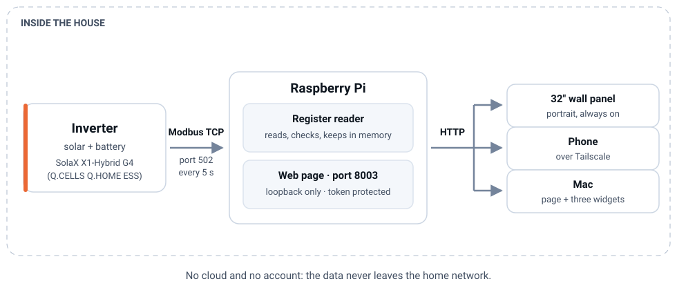
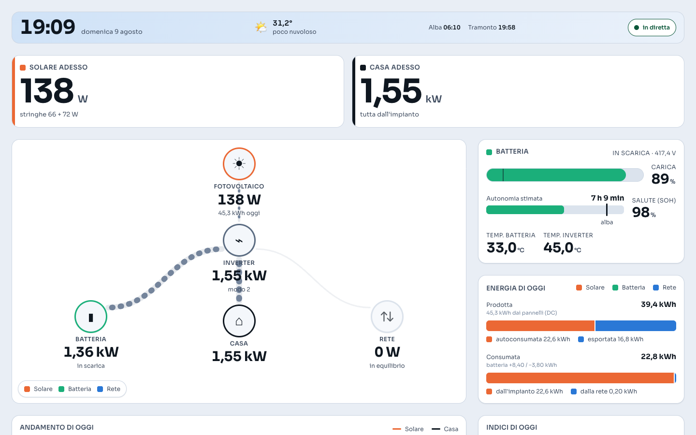
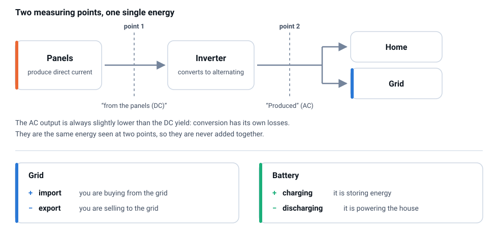
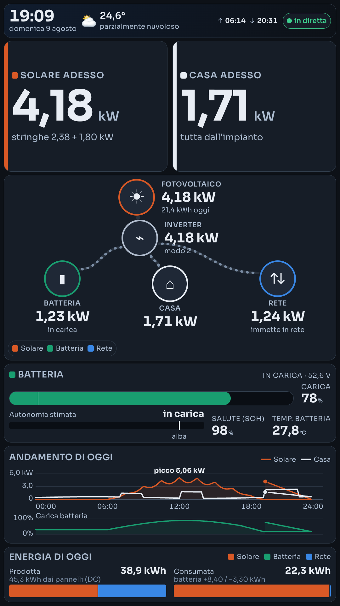
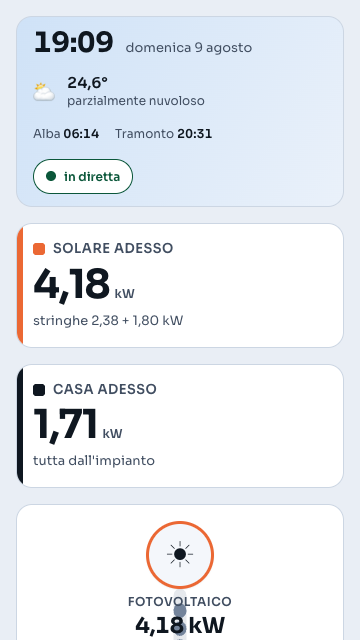
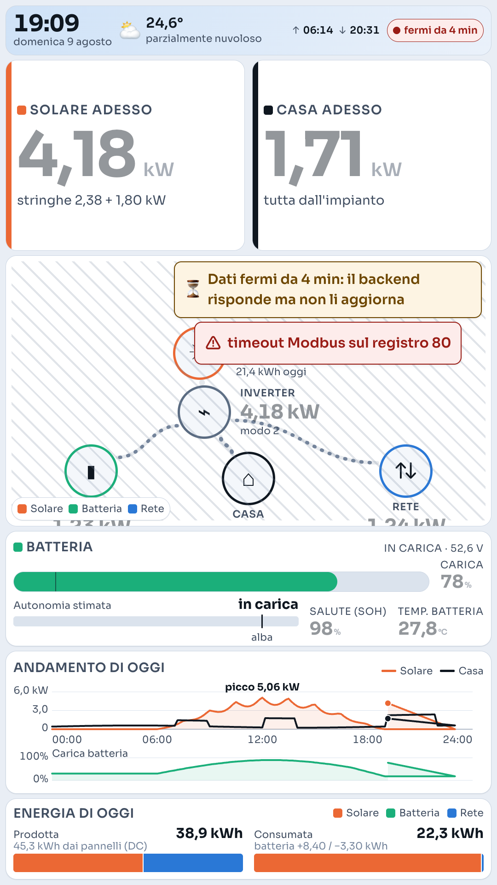
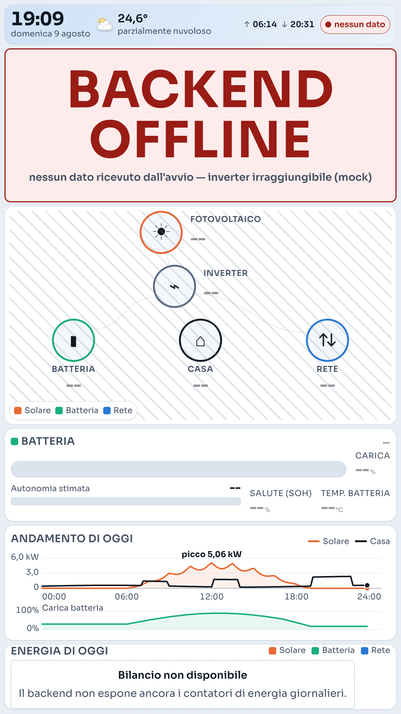

How to open EnergyFlow, how to read what it shows, how to notice when something is wrong, and what to do about it.
A note on language. The dashboard itself is in Italian — it lives on a wall in an Italian home. This guide translates every label it mentions, and the screenshots are the real interface, not mock-ups.
EnergyFlow reads the home solar inverter directly, over the local network, and shows on a screen what is happening to the energy right now: how much the panels are producing, how much the house is using, what goes in and out of the battery, and what is being exchanged with the grid.
It answers one question at a glance — am I running on my own sun right now, or am I buying power? — without opening the manufacturer's portal, without waiting for a cloud round trip, and without the household data ever leaving the house.

There is nothing to do. The 32" portrait monitor in the hallway is driven by the Raspberry Pi: when the Pi boots, a full-screen browser opens the dashboard on its own. It has no keyboard and no mouse, it is not meant to be touched or refreshed by hand — it is a sign that updates itself every five seconds. If the screen is black or blank, go to “When something breaks”.
The same page opens on any device enrolled in the home tailnet, at:
https://<rpi-host>.<tailnet>.ts.net/It works both at home and away, as long as the Tailscale client on the phone or Mac is running and connected. There is no password to type: the page authorises itself on the first load.
Why there is no plain LAN address. The server listens on the Raspberry Pi itself, not on the home network. Exposing it on the Wi-Fi would make the household telemetry readable by anyone connected — guests, televisions, smart bulbs, anyone who knows the Wi-Fi password. Tailscale gets the same result without opening anything to anyone, so it is used from the sofa too.
There are also three ways to keep an eye on the numbers without a tab open:
All three read from 127.0.0.1:8003, that is, they expect to find the server
on the Mac. So they need a tunnel to the Raspberry Pi, opened once and left running:
ssh -N -L 8003:127.0.0.1:8003 <rpi-host>plus the token in the file the widgets look for — see “Service, logs and token”.

Time and date, local weather, sunrise and sunset, and on the right the freshness chip: it is the one element that separates “data from right now” from “numbers frozen on a screen”. When it is green and reads in diretta (live), what you see happened less than fifteen seconds ago.
The power the panels are producing at this instant, in W or kW. Underneath, in small
type, the split between the two strings (stringhe 2,38 + 1,80 kW): if one of them
sits at zero in full sun, there is something to look at on the roof.
How much the house is drawing at this instant. The line below answers the question people actually ask — am I paying for this? — with “tutta dall'impianto” (all from the system), “coperta al 60% dall'impianto” (60% covered by the system) or “tutta dalla rete” (all from the grid).
Five nodes — panels, inverter, battery, home, grid — joined by arcs. What matters is the direction: the dots travel along the arc the way the energy is going. A node at rest (below 20 W) stays where it is but dims, so the eye stops looking for it.
The numbers on the nodes are always unsigned: direction is carried by the phrase and the moving dots, not by a minus sign in front of a figure.
Two curves, solar and home, with the battery charge strip below them on the same time axis. The curve comes from the Raspberry Pi, not from the browser: it survives a reboot of the Pi and a page reload, so the panel comes back with the day already drawn instead of starting from scratch.
Every point is one minute, and it is the average of the twelve samples read in that minute — not the last value, which would be a matter of luck. If the server does not answer, the browser acts as a safety net with the curve it accumulated itself: a partial curve beats an empty card.
Below the trend sits the Storico section, with “◂ Giorno prec.” (previous day) and “Giorno succ. ▸” (next day) to move through past days. The “next day” button switches off on today, rather than staying clickable and leading nowhere.
A day can also be opened directly, and the link can be bookmarked or sent to someone:
https://<rpi-host>.<tailnet>.ts.net/?day=2026-08-08A day with no data is not drawn as a flat line at zero — that would be indistinguishable from a house using nothing. It says instead that there is nothing, and why: “either the system was off, or the day is older than the retention window”.
What is exact and what is reconstructed. In the daily roll-up, only PV production comes from the inverter's own counter and is exact. Import, export, charge and discharge are reconstructed by integrating the per-minute averages, because at midnight the device's daily counters reset and that number can no longer be asked for. They are good for comparing one day with another, not for disputing an electricity bill.
Two bars, and they are two real totals, not a sum of unlike things.
This is where everybody gets confused, and reasonably so: they are two measurements of the same energy taken at two different points of the system.
AC is always a little lower than DC, because conversion has its losses. They are never added together: that would count the same sunshine twice.

On screen the numbers are unsigned and carry a phrase, so this rule mainly matters to anyone looking at the raw data (the register panel, the widgets, the API):
| Value | Positive | Negative |
|---|---|---|
| Grid | import — you are buying | export — you are selling |
| Battery | charging — it is storing | discharging — it is powering the house |


The dashboard never pretends. If the numbers cannot be trusted it says so, and it says so differently depending on what is broken: these are different faults and they send you looking in different places.
| What you see | What it means | What to do |
|---|---|---|
| in diretta | All good: the last reading is less than 15 seconds old. | Nothing. |
| aggiornati 20 s fa | A passing delay, between 15 and 60 seconds. An amber banner appears too. | Wait. If it goes green again within a minute, nothing happened. |
| fermi da 4 min | The Raspberry Pi is answering, but the numbers are frozen: it is the inverter that stopped responding, not the server. The values stay on screen, dimmed. | See “The numbers are frozen”. |
| nessun dato + BACKEND OFFLINE | The Raspberry Pi has not answered for over a minute. The numbers disappear: leaving them would be worse, they would keep looking true. | See “BACKEND OFFLINE”. |
| A red banner with technical text | The last error reported by the reader, for example
timeout Modbus sul registro 80. |
That is the clue to carry into the logs. It usually accompanies one of the two cases above. |
| A struck-through number | The value arrived, but the system judges it untrustworthy: outside the physically possible range, or a counter that ran backwards. | Look at it, do not trust it. See “A number is struck through”. |


Why two states and not one. A live server handing out a reading that is four minutes old is not “offline”: it answers perfectly well, it is the inverter reader that has stalled. Calling both the same thing would send you hunting for the fault in the wrong place.
They are for the computer view and for maintenance (a keyboard plugged into the Raspberry Pi). The wall panel has no keyboard. Press ? at any time to see them on screen.
| Key | What it does |
|---|---|
| ? | Opens and closes the shortcut help |
| r | Refreshes now, without waiting for the cycle |
| a | Auto-refresh on / off |
| t | Theme: automatic → light → dark → automatic |
| k | Switches between kiosk (giant numbers) and compact mode |
| 1 | Go to the flow view |
| 2 | Go to the history view |
| 3 | Opens and closes the 3D view of the system |
| d | Shows or hides the register panel |
| f | Full screen |
| Esc | Closes the help |
On automatic the theme follows local sunrise and sunset: light by day, dark by night. A choice made with t is remembered on that device until you cycle back to automatic.
The 3D view opens with 3 or with the “3D” button among the controls, and closes the same way (or with Esc). It is the only heavy part of the project, which is why it loads only when you open it: the wall panel, where nobody looks at it, does not pay for a graphics library it will never use. When you leave, the drawing really stops — and it stops when the window goes into the background too. The numbers it shows are the same ones as the 2D view, not a separate calculation.
On the Raspberry Pi, EnergyFlow runs as a system service and comes back by itself on every boot and after every crash.
sudo systemctl status energyflow # how it is doing
sudo systemctl restart energyflow # restart it
journalctl -u energyflow -f # watch what it says, liveBy hand, for a test (from the project folder):
python3 invert.py --serve # port 8003, loopback only
python3 invert.py --serve --debug # + a register dump on every readThere is exactly one port: 8003. If it is taken, the server refuses to start and says so, rather than quietly moving elsewhere: a panel pointing at the wrong port just stays blank with no explanation.
# restart the graphical session (the data service stays up)
sudo systemctl restart lightdm
# rotate the monitor without rebooting
XDG_RUNTIME_DIR=/run/user/1000 WAYLAND_DISPLAY=wayland-0 \
wlr-randr --output HDMI-A-1 --transform 270One file per day, in the project's log/ folder, next to the SODE:
log/2026-08-09.txtIt holds the readings, the timings in milliseconds, the Modbus reader's errors and also the browser's own messages, which the page relays back to the server: that way you can work out what happened on the wall panel without standing in front of it.
Next to the daily logs, in log/energy/, sit the files that hold up the
Storico section:
log/energy/2026-08-09.csv per-minute detail, kept for 90 days
log/energy/daily.csv one row per day, never deletedTo switch history off entirely, in config.json:
"history": { "enabled": false }With history off the Storico section does not appear at all — see the troubleshooting section.
curl -s http://localhost:8003/healthIt answers 200 with "status": "ok" when the reader is running and the
values are within the range of the possible; 503 with "status": "degraded"
and the list of reasons when not. It is a real probe, not a “the process is alive” ping.
In the browser there is nothing to do: the page receives the token by itself on first load. It is needed by the Mac widgets and by any request you make by hand.
# read it (it is generated on first start if missing)
python3 invert.py --print-token
# hand it to the macOS widgets
mkdir -p ~/.config/energyflow
python3 invert.py --print-token > ~/.config/energyflow/token
chmod 600 ~/.config/energyflow/tokenThe token lives in the project's .env file on the Raspberry Pi with 600
permissions, and is not in the repository. If it is regenerated, the widgets
must be reconfigured.
python3 invert.py --validateIt checks twelve physical invariants against real data — for example that today's produced energy is consistent with instantaneous power integrated over time, or that total counters never run backwards. This is the check that tells you whether the register map is still reading the right things.
# record a few minutes of data and re-check it at leisure
python3 invert.py --capture day.json --duration 300 --interval 5
python3 invert.py --validate --from day.jsonIn order, from the most likely:
sudo systemctl status energyflow. If it is stopped,
sudo systemctl restart energyflow and read
journalctl -u energyflow -n 50.sudo systemctl restart lightdm restarts the graphical session; the data service
is untouched.--password-store=basic option is missing from the autostart line: without it,
Chromium asks “Choose password for new keyring” and the page never opens.The Raspberry Pi is answering: what is not answering is the inverter. The usual causes:
What to look at: journalctl -u energyflow -n 100, and the lines containing
Poll error or Discovery in today's file under log/.
The server has stopped answering whoever is looking at the page. From the Raspberry Pi:
sudo systemctl restart energyflow
curl -s http://localhost:8003/healthIf the service will not come back, the error message in the logs almost always says why. The two recurring cases are port 8003 already taken by another process (the server writes it to the log and stops on purpose) and an SD card that is full or has gone read-only.
If the wall panel works but the phone does not, the problem is not the server but the link: check that Tailscale is connected on the phone.
The system received that value but considers it untrustworthy: it falls outside the physically possible range (a four-digit battery voltage, say) or it is a counter that ran backwards.
This is not a dashboard fault, it is the dashboard doing its job: it would rather flag a doubt than show a clean, false number.
curl -s http://localhost:8003/health # lists suspect fields and failing invariants
python3 invert.py --validate # full check against real dataIf a field stays suspect for long, the register map needs revisiting for that field — which is exactly the signal this mechanism exists to raise.
The weather is fetched by the Raspberry Pi, not by the browser, and cached for a quarter of an hour. When it is missing:
config.json (the location section);It is not serious: without weather the rest of the dashboard keeps working, but the automatic day/night theme and the sunrise marker lose their reference.
In order:
ssh -N -L 8003:127.0.0.1:8003 <rpi-host>.~/.config/energyflow/token must hold the current token; if the server generated a
new one, rewrite it (see above). Without it the server answers
401 and the widget stays empty rather than faking it.curl -s -H "Authorization: Bearer $(cat ~/.config/energyflow/token)" \
http://127.0.0.1:8003/data | head -c 200The panel always says which case it is, and the wording changes accordingly:
If the Storico section is missing entirely, history is switched off in
config.json ("history": {"enabled": false}): the endpoint answers 404
and the page hides the section rather than showing two buttons that lead nowhere. Turn it back on,
restart the service, and the section reappears by itself.
If the files exist but stop growing, look for the history write lines in log/: a full
or read-only microSD card is the usual cause.
No. The only thing the Raspberry Pi asks for from outside is the weather forecast, and it asks for it itself using the local coordinates: no request leaves the browser towards the internet.
Look at the freshness chip first: if it says “fermi da…”, the number is not up to date, it is not zero. If it says “in diretta” and the value really is zero, either the inverter is restarting or production is below the measurement threshold — which happens at dawn and dusk.
Because they are two different measuring points, and converting from direct to alternating current has its losses. See DC and AC.
No, not any more: the curve lives on disk on the Pi, not in the browser. After a reboot the page comes back with the day already drawn, and past days stay browsable in the Storico section.
Per-minute detail for 90 days; the summary of each day forever, because it takes a handful of bytes. Keeping every minute forever would mean constant writes to the microSD card for minutes from two years ago that nobody will ever look at.
Yes, that is what it is for: it switches to the dark theme by itself at night, and the animations are light.
The Raspberry Pi polls the inverter every five seconds and the page re-reads at the same rate. Past fifteen seconds the chip turns amber; past a minute the numbers disappear.
Yes, on purpose. Of the register map, only the verified fields are published; the ones not identified with certainty are left out rather than guessed. A plausible but wrong number is worse than a missing one.
Whoever is physically in front of the panel, and whoever is enrolled in the home tailnet. There is no port open to the internet.